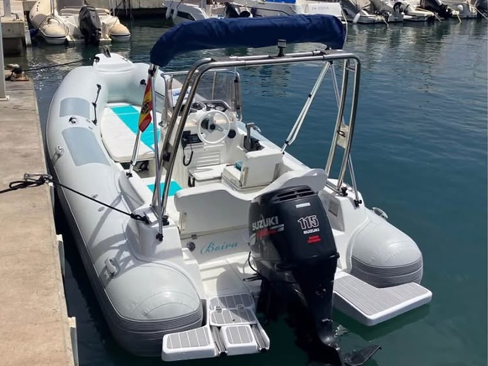
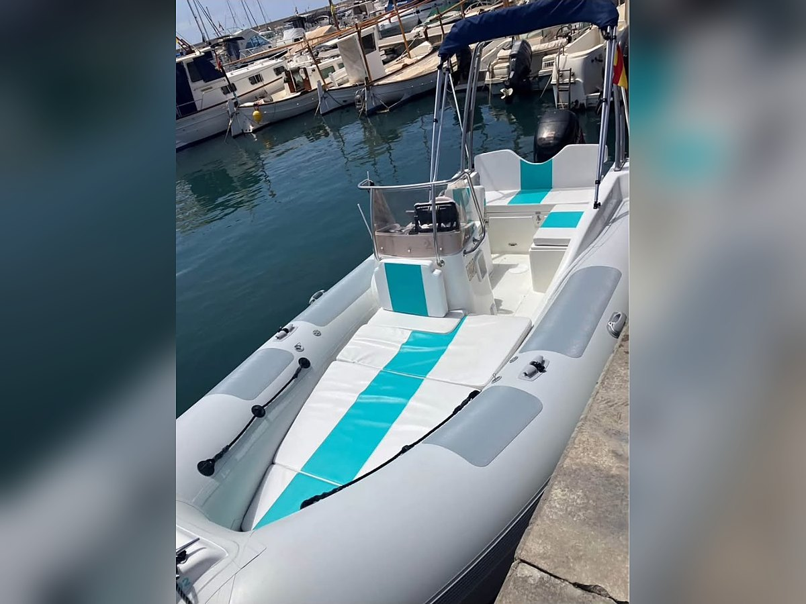
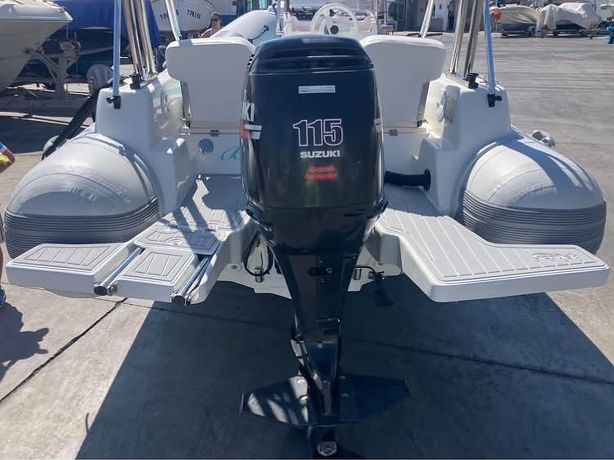
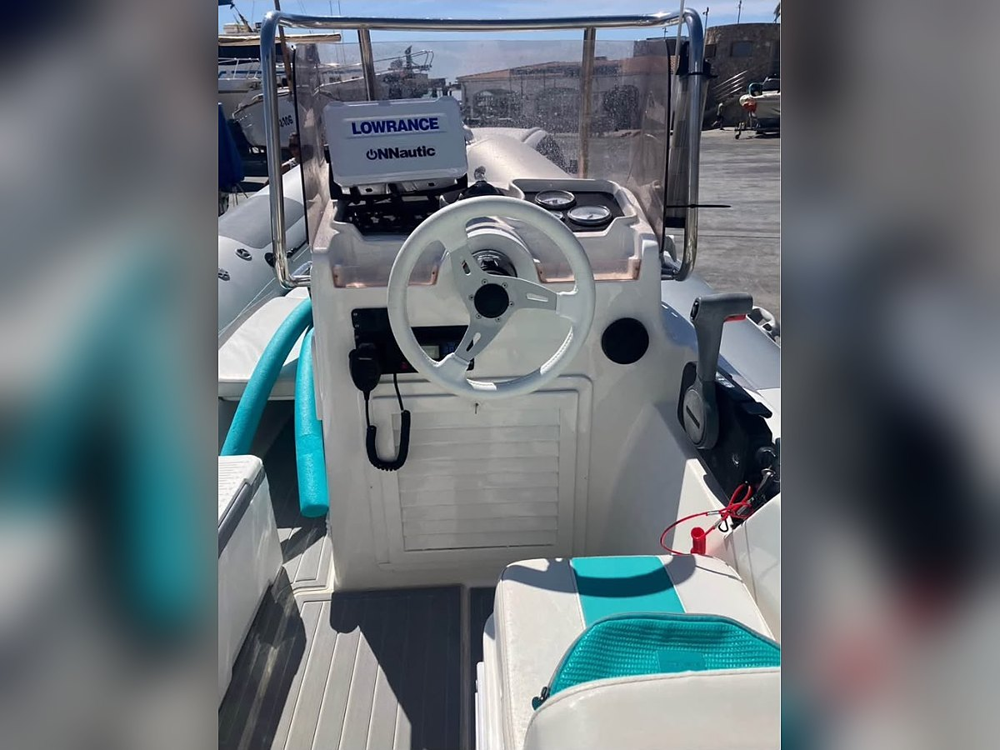
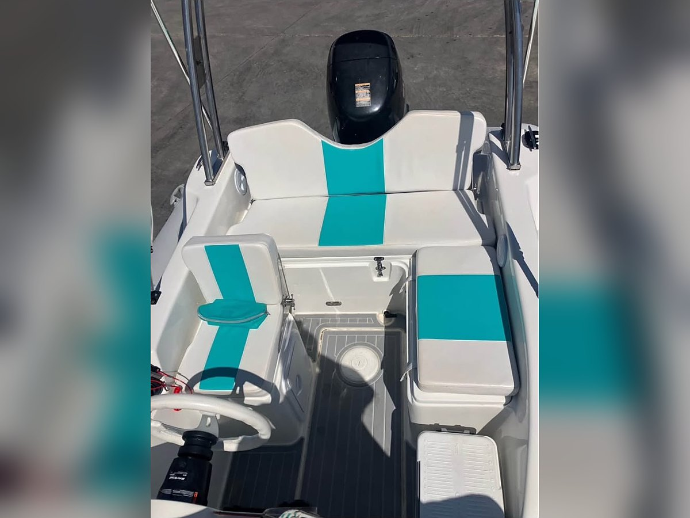
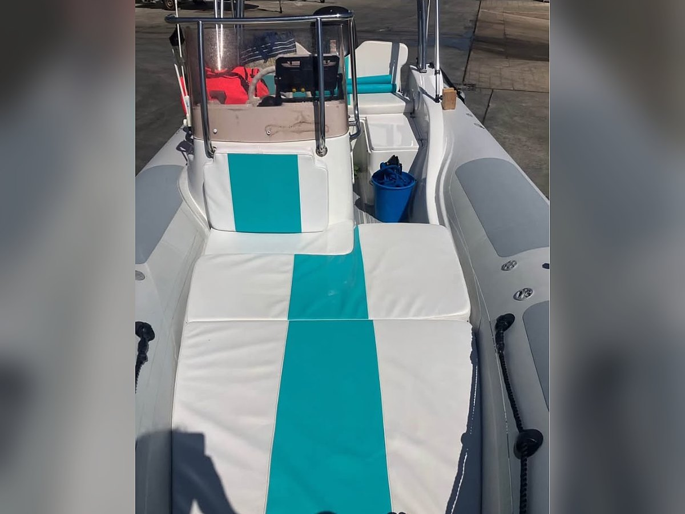
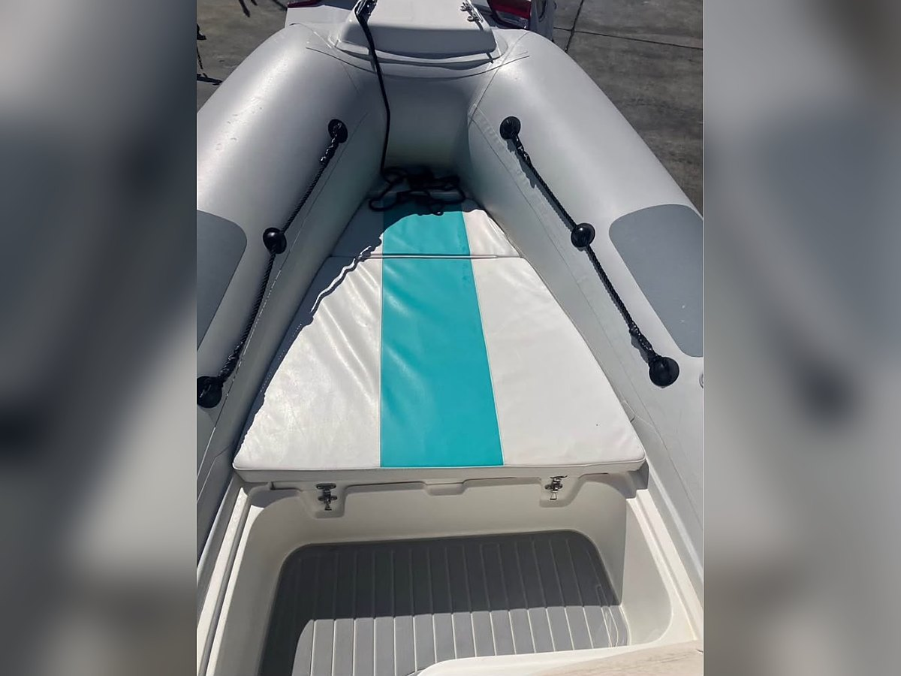
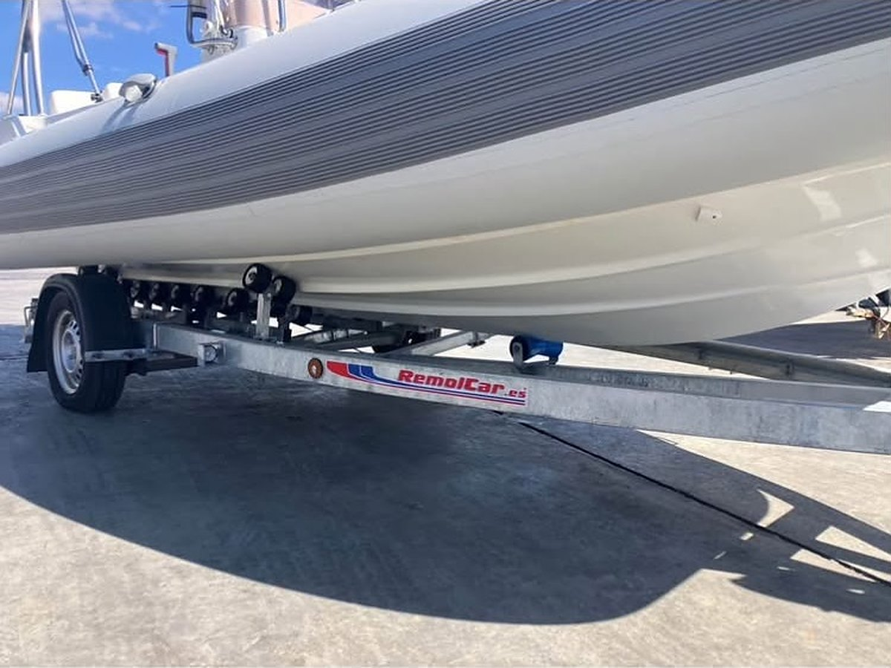

Inicio · Barcos en venta · Sacs 535
Sacs 535
25.000 €
Plata Marine gestiona el contacto y la operación como intermediario. Antes de reservar recibirás la identidad y condición del vendedor y el desglose de precio, impuestos y gastos de titularidad aplicables. No cobramos honorarios de comprador en barcos de nuestra cartera.








- Año
- 2002
- Tipo
- Semirrígida
- Eslora
- 5,35 m
- Motor
- Suzuki 115 cv, fueraborda de gasolina
- Horas
- Aprox. 400
- Dirección
- SeaStar
- Restauración
- Flotadores y tapicería nuevos · casco pintado · electricidad y baterías nuevas
- Agua
- Depósito de 50 l con ducha
- Equipo
- VHF · arco inox · bimini con laterales y cierre de proa
- Cubierta
- SeaDek · plataformas de popa
- Remolque
- Nuevo, 1.200 kg, multirrodillos basculante, cabestrante manual y eléctrico con mando
- Titulación
- Se gobierna con Licencia de Navegación
- Ubicación
- Mallorca (guardada en garaje)
- Bandera
- Española, lista 7ª, a nombre de particular
Cómo lo veo
Una Sacs 535 de 2002 que su propietario ha restaurado a fondo: flotadores nuevos, toda la tapicería nueva, casco pintado e instalación eléctrica y baterías nuevas. Sacs es un astillero italiano con mucha tradición en semirrígidas, y los 5,35 m de esta 535 son un tamaño muy cómodo para calas y para salir con familia o amigos, y se puede gobernar con la Licencia de Navegación.
Monta un Suzuki de 115 CV con unas 400 horas y dirección SeaStar. Se entrega con el kit completo de mantenimiento y una hélice nueva sin estrenar.
Para el día a día lleva depósito de agua de 50 litros con ducha, VHF, arco de inox con bimini, suelo SeaDek y plataformas de popa. El toldo se cierra por los laterales, con una ventana a cada lado, y tiene una extensión que cubre toda la proa, todo con cremalleras.
Se vende con remolque nuevo de 1.200 kg, multirrodillos y basculante, con cabestrante manual y eléctrico con mando, así que se puede mover y botar con facilidad. Está guardada en garaje en Mallorca y se puede ver con cita previa. El precio son 25.000 €.
Equipamiento: Flotadores nuevos, tapicería nueva, casco pintado, electricidad y baterías nuevas, Suzuki 115 cv con dirección SeaStar, depósito de agua de 50 l con ducha, VHF, arco inox, bimini con laterales cerrables con ventana y extensión de proa, SeaDek, plataformas de popa, kit completo de mantenimiento, hélice nueva sin estrenar, remolque nuevo de 1.200 kg con cabestrante manual y eléctrico.